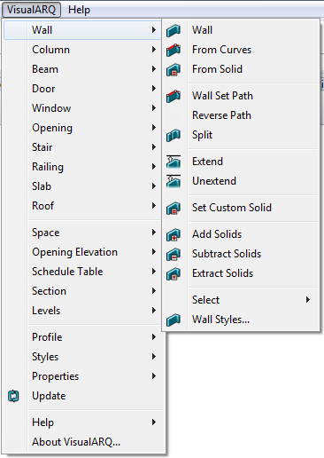

Le menu déroulant VisualARQ présente la plupart des commandes de l'application. Tous les objets et tous les outils de VisualARQ qui se trouvent dans les barres d'outils apparaissent avec leurs options.

Menu déroulant de VisualARQ.
REMARQUE : Le menu déroulant devrait apparaître quand VisualARQ est chargé dans la session actuelle de Rhino après son installation. S'il n'apparaît pas, VisualARQ pourrait utiliser un ancien fichier "visualarq.tb" (dans Rhino 4.0) ou "visualarq.rui" (dans Rhino 5). Dans ce cas, vous devez supprimer ce fichier manuellement, désinstaller VisualARQ et le réinstaller. Les fichiers "visualarq.tb" / "visualarq.rui" se trouvent dans les dossiers suivants :